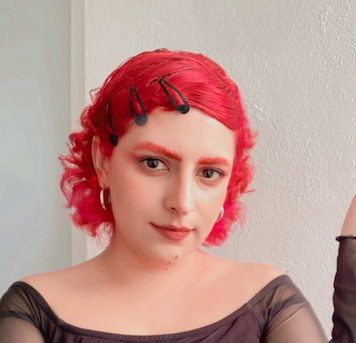

Gabriela Nájera Lagunas
Artista Digital
Contacto
Ciudad de México
(722) 230-6839 | gaby.elaia@gmail.com
Educación
Universidad del Estado de México
Licenciatura en arte digital
2014-2019
Trayectoria
Soy una artista, diseñadora gráfica e ilustradora con gran versatilidad y la capacidad de gestionar con éxito múltiples proyectos. Mi destreza se destaca en el trabajo en equipo y el pensamiento conceptual, lo que me ha llevado a alcanzar proyectos sobresalientes y cumplir con precisión los objetivos establecidos
Trabajo
Aquí puedes mostrar información sobre los proyectos y trabajos relevantes de Gabriela.
Redes Sociales
Conéctate con Gabriela en sus redes sociales: